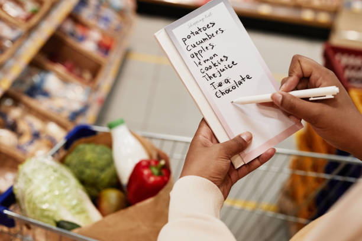

I often struggle to come up with a grocery list as a college student. I am unfamiliar with meal prepping, and I want to start, while also keeping in mind my financial constraints. With these ideas in mind, I decided to see if Gemini could generate a grocery list for me that fits into my budget.
Here is how my conversation went:
USER
I plan on going to Acme in a few hours. Generate a grocery list with the budget of under 75 dollars to cook 3 meals for this week. I can not eat beef or pork.
ASSISTANT
Okay, heading to Acme! Here’s a grocery list designed to get you three delicious, no-beef/pork meals for under $75, with some common pantry staples assumed (like salt, pepper, olive oil).
Important Note: Prices are estimates and can vary by location and current sales at Acme. This list aims to give you a buffer!
Acme Grocery List (Under $75)
Pantry Staples (Check if you already have these first!): * Olive Oil * Salt * Black Pepper * Garlic Powder * Onion Powder * Dried Oregano * Chili Powder * Cumin * Paprika
Your Shopping List:
Produce: * 1 Large Yellow Onion: ~$1.00 * 1 Head of Garlic: ~$1.00 * 1 Green Bell Pepper: ~$1.50 * 1 Lemon: ~$0.75 * 1 Bag Fresh Spinach (5-6 oz): ~$3.50 * 1 Head Broccoli OR 1 Bag Frozen Broccoli Florets (12-16 oz): ~$2.50 * 3 lbs Russet or Yukon Gold Potatoes: ~$3.50
Proteins & Dairy: * 1.5 lbs Boneless, Skinless Chicken Breasts or Thighs: ~$8.00 - $10.00 (Look for family packs or sales!) * 1 Small Bag Shredded Cheddar Cheese (8 oz): ~$3.50 (Optional, for chili)
Grains & Legumes: * 1 Box Pasta (Penne, Spaghetti, or Rotini): ~$1.50 - $2.00 * 1 Bag White or Brown Rice (small, 1-2 lbs): ~$2.50 - $3.00 * 2 Cans Kidney Beans (15 oz each): ~$2.50 * 1 Can Black Beans (15 oz): ~$1.25
Canned Goods & Sauces: * 2 Cans Diced Tomatoes (14.5 oz each): ~$2.50 * 1 Can Crushed Tomatoes (28 oz): ~$2.00 * 1 Carton Chicken Broth (32 oz): ~$2.50
Estimated Total: $36.50 - $43.00 This leaves you plenty of room for slight price variations, or to grab a couple extra pantry staples if you’re out!
Your 3 Meal Plan for the Week
Each meal is designed to yield 2-3 servings, so you’ll have leftovers for lunch or another dinner!
Meal 1: Hearty Chicken & Spinach Pasta
- Ingredients Used: Chicken, Onion, Garlic, Spinach, Canned Crushed Tomatoes, Pasta, Chicken Broth (or water), Olive Oil, Salt, Pepper, Dried Oregano.
- Instructions:
- Cook pasta according to package directions. Drain and set aside.
- Dice chicken into bite-sized pieces. Season with salt and pepper.
- Chop half the onion and mince 2-3 cloves of garlic.
- In a large pot or deep skillet, heat a tablespoon of olive oil over medium-high heat. Add chicken and cook until browned and cooked through. Remove chicken and set aside.
- Add a little more oil if needed, then sauté the chopped onion until softened (about 3-5 minutes). Add garlic and sauté for another minute until fragrant.
- Pour in the can of crushed tomatoes and about 1/2 cup of chicken broth (or water). Add 1 tsp dried oregano, salt, and pepper to taste. Bring to a simmer.
- Stir in the fresh spinach and cook until wilted.
- Return the cooked chicken to the sauce. Add the cooked pasta and toss to combine. Serve warm.
Meal 2: Quick & Easy Vegetarian Chili with Rice
- Ingredients Used: Onion, Garlic, Green Bell Pepper, Canned Diced Tomatoes, Kidney Beans, Black Beans, Rice, Chili Powder, Cumin, Paprika, Salt, Pepper, Shredded Cheddar (optional).
- Instructions:
- Cook rice according to package directions.
- Chop the remaining half onion, the green bell pepper, and mince 2-3 cloves of garlic.
- In a large pot or Dutch oven, heat a tablespoon of olive oil over medium heat. Add chopped onion and bell pepper and sauté until softened (about 5-7 minutes). Add minced garlic and cook for another minute.
- Drain and rinse the kidney beans and black beans.
- Stir in the two cans of diced tomatoes (undrained), the drained beans, 1 tbsp chili powder, 1 tsp cumin, 1/2 tsp paprika, salt, and pepper to taste. Add about 1/2 cup of water or chicken broth if you like a thinner chili.
- Bring to a simmer, then reduce heat to low, cover, and let it cook for at least 15-20 minutes for flavors to meld, stirring occasionally.
- Serve hot over cooked rice, topped with shredded cheddar cheese if desired.
Meal 3: Lemon Herb Baked Chicken with Roasted Potatoes & Broccoli
- Ingredients Used: Chicken, Potatoes, Broccoli, Lemon, Garlic, Olive Oil, Salt, Pepper, Dried Oregano (or Dried Parsley/Basil if you have it).
- Instructions:
- Preheat oven to 400°F (200°C).
- Wash and chop potatoes into 1-inch cubes. Chop broccoli into florets. Mince 2-3 cloves of garlic.
- In a large bowl, toss the potatoes and broccoli with 2 tablespoons of olive oil, half the minced garlic, salt, and pepper. Spread them in a single layer on a baking sheet.
- Cut the remaining chicken breasts/thighs into similar-sized pieces (or leave whole if you prefer). In the same bowl, toss the chicken with 1 tablespoon of olive oil, the remaining minced garlic, 1 tsp dried oregano, the juice of half the lemon, salt, and pepper.
- Add the seasoned chicken to the baking sheet with the vegetables, ensuring everything is in a single layer.
- Bake for 25-35 minutes, flipping the chicken and vegetables halfway through, until the chicken is cooked through (internal temperature 165°F/74°C) and the potatoes are tender and lightly browned.
- Squeeze the remaining lemon half over the chicken and vegetables before serving.
Enjoy your delicious and budget-friendly meals from Acme!
USER
Thank you! I am only cooking for one, does this grocery list and recipe reflect this?
ASSISTANT
You got it! Cooking for one is all about smart shopping and portion control to avoid waste and save money. This revised list and meal plan are specifically tailored for a single person, aiming to get you 3 distinct cooking sessions that will provide 2-3 servings each (dinner + 1-2 leftover lunches/dinners).
Acme Grocery List (Under $75 - Revised for Single Person)
Pantry Staples (Check if you already have these first!): * Olive Oil * Salt * Black Pepper * Garlic Powder * Onion Powder * Dried Oregano * Chili Powder * Cumin * Paprika
Your Shopping List (Adjusted Quantities):
Produce: * 1 Small Yellow Onion: ~$0.75 * 1 Head of Garlic: ~$1.00 * 1 Green Bell Pepper: ~$1.50 * 1 Lemon: ~$0.75 * 1 Small Bag Fresh Spinach (5-6 oz): ~$3.50 (This is often the smallest size; you’ll use it up in pasta and maybe a side salad or omelet.) * 1 Small Head Broccoli OR 1 Small Bag Frozen Broccoli Florets (10-12 oz): ~$2.00 * 1.5 lbs Russet or Yukon Gold Potatoes: ~$1.50 (About 3-4 medium potatoes)
Proteins & Dairy: * 1 lb Boneless, Skinless Chicken Breasts or Thighs: ~$5.00 - $7.00 (This will give you 3-4 pieces, perfect for dividing among your meals.) * 1 Small Bag Shredded Cheddar Cheese (8 oz): ~$3.50 (Optional, for chili; can also be used for other things like eggs.)
Grains & Legumes: * 1 Box Pasta (Penne, Spaghetti, or Rotini): ~$1.50 - $2.00 (This will last you many meals.) * 1 Small Bag White or Brown Rice (1 lb): ~$2.00 - $2.50 * 1 Can Kidney Beans (15 oz): ~$1.25 * 1 Can Black Beans (15 oz): ~$1.25
Canned Goods & Sauces: * 1 Can Diced Tomatoes (14.5 oz): ~$1.25 * 1 Can Crushed Tomatoes (28 oz): ~$2.00 (You’ll use half, then you can freeze the other half or use it for another meal later in the month.) * 1 Carton Chicken Broth (32 oz): ~$2.50 (You’ll use small amounts, so this will last a while. Freeze extra in ice cube trays for future use!)
Estimated Total: $27.25 - $33.50 This is well under your $75 budget, giving you lots of flexibility for price variations, or to splurge on a treat if you wish!
Your 3 Meal Plan for the Week (Adjusted for One Person)
Each meal provides 1 serving for dinner and 1-2 servings for leftovers (lunches or another dinner), so you’re cooking 3 times, but getting 6-9 total meals out of it.
Meal 1: Hearty Chicken & Spinach Pasta (Yields 2-3 servings)
- Ingredients Used: ~1/3 lb Chicken, 1/2 Small Onion, 2-3 cloves Garlic, 1/2 Bag Spinach, ~1/2 Can Crushed Tomatoes, ~4 oz dry Pasta, ~1/2 cup Chicken Broth (or water), Olive Oil, Salt, Pepper, Dried Oregano.
- Instructions:
- Cook ~4 oz dry pasta according to package directions. Drain and set aside.
- Dice ~1/3 lb chicken into bite-sized pieces. Season with salt and pepper.
- Chop half the onion and mince 2-3 cloves of garlic.
- In a large pot or deep skillet, heat a tablespoon of olive oil over medium-high heat. Add chicken and cook until browned and cooked through. Remove chicken and set aside.
- Add a little more oil if needed, then sauté the chopped onion until softened (about 3-5 minutes). Add garlic and sauté for another minute until fragrant.
- Pour in about half the can of crushed tomatoes and ~1/2 cup of chicken broth (or water). Add 1 tsp dried oregano, salt, and pepper to taste. Bring to a simmer.
- Stir in about half the fresh spinach and cook until wilted.
- Return the cooked chicken to the sauce. Add the cooked pasta and toss to combine. Serve warm.
- Store Leftovers: Divide into single-serving containers and refrigerate for up to 3-4 days, or freeze for longer.
Meal 2: Quick & Easy Vegetarian Chili with Rice (Yields 2-3 servings)
- Ingredients Used: 1/2 Small Onion, 2-3 cloves Garlic, 1 Green Bell Pepper, 1 Can Diced Tomatoes, 1 Can Kidney Beans, 1 Can Black Beans, ~1/2 cup dry Rice, Chili Powder, Cumin, Paprika, Salt, Pepper, Shredded Cheddar (optional).
- Instructions:
- Cook ~1/2 cup dry rice according to package directions.
- Chop the remaining half onion, the green bell pepper, and mince 2-3 cloves of garlic.
- In a large pot or Dutch oven, heat a tablespoon of olive oil over medium heat. Add chopped onion and bell pepper and sauté until softened (about 5-7 minutes). Add minced garlic and cook for another minute.
- Drain and rinse the kidney beans and black beans.
- Stir in the one can of diced tomatoes (undrained), the drained beans, 1 tbsp chili powder, 1 tsp cumin, 1/2 tsp paprika, salt, and pepper to taste. Add about 1/2 cup of water or chicken broth if you like a thinner chili.
- Bring to a simmer, then reduce heat to low, cover, and let it cook for at least 15-20 minutes for flavors to meld, stirring occasionally.
- Serve hot over cooked rice, topped with shredded cheddar cheese if desired.
- Store Leftovers: Divide into single-serving containers and refrigerate for up to 3-4 days, or freeze for longer.
Meal 3: Lemon Herb Baked Chicken with Roasted Potatoes & Broccoli (Yields 2-3 servings)
- Ingredients Used: Remaining ~1/3-1/2 lb Chicken, 1.5 lbs Potatoes, Small Head/Bag Broccoli, 1 Lemon, 2-3 cloves Garlic, Olive Oil, Salt, Pepper, Dried Oregano.
- Instructions:
- Preheat oven to 400°F (200°C).
- Wash and chop potatoes into 1-inch cubes. Chop broccoli into florets. Mince 2-3 cloves of garlic.
- In a large bowl, toss the potatoes and broccoli with 2 tablespoons of olive oil, half the minced garlic, salt, and pepper. Spread them in a single layer on a baking sheet.
- Cut the remaining chicken breasts/thighs into similar-sized pieces (or leave whole if you prefer). In the same bowl, toss the chicken with 1 tablespoon of olive oil, the remaining minced garlic, 1 tsp dried oregano, the juice of half the lemon, salt, and pepper.
- Add the seasoned chicken to the baking sheet with the vegetables, ensuring everything is in a single layer.
- Bake for 25-35 minutes, flipping the chicken and vegetables halfway through, until the chicken is cooked through (internal temperature 165°F/74°C) and the potatoes are tender and lightly browned.
- Squeeze the remaining lemon half over the chicken and vegetables before serving.
- Store Leftovers: Divide into single-serving containers and refrigerate for up to 3-4 days.
Tips for Single Cooking & Minimizing Waste:
- Freeze Smart: For items like chicken broth or crushed tomatoes, if you don’t use the whole container/can, you can freeze the rest in smaller portions (ice cube trays work great for broth!).
- Get Creative with Leftovers: If you get bored of eating the same thing, try repurposing. Leftover chicken from Meal 3 could go into a quick salad or sandwich. Leftover spinach can be added to scrambled eggs.
- “Use It Up” Meal: Towards the end of the week, if you have small bits of veggies or protein left, make a “fridge clean-out” stir-fry, omelet, or soup.
- Meal Prep Day: Dedicate an hour or two on one day to cook these meals. This way, you have your dinners and lunches ready to go for several days!
Enjoy your delicious and efficient cooking for one!
Reflection
This was a fun and insightful conversation with Gemini. It was able to create three distinct recipes based on the grocery list it curated. The grocery list was well below the budget as well. However, the items on the grocery list were vague. I wanted to see more specific brands to choose from that Acme would offer. Gemini did not take into account the specific store I was shopping in, since this is a more general grocery list. Overall, I would use AI to help meal prep!